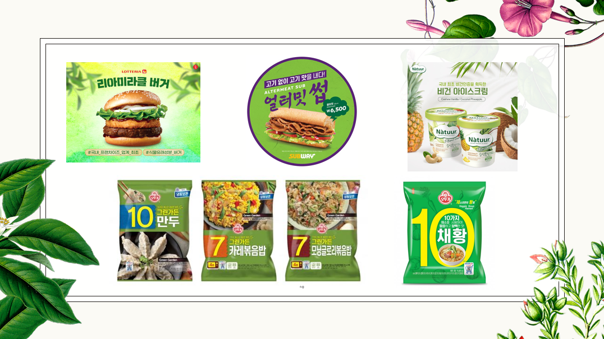
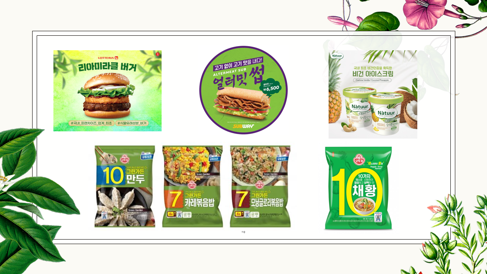
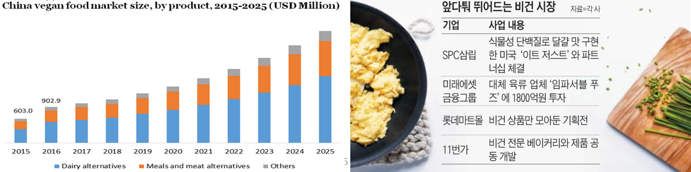

프로젝트 구상 배경&주제
 

써브웨이 얼티밋 썹, 롯데리아 미라클 버거, 나뚜루 비건 아이스크림, 오뚜기 채황, 오뚜기 ‘그린가든 만두•카레볶음밥•모닝글로리볶음밥’ 비건 시리즈를 들어보신 적 있으신가요?
이들의 공통점은 비건 식품이라는 것입니다.

한국채식연합에 따르면 국내 채식 인구는 2008년 15만 명에서 시작하여 현재 2019년 150만명으로 추산되고, 올해는 200만명에 도달할 것으로 예상된다고 합니다. 약 10년 사이에 10배 이상 증가한 수치입니다. 전 세계의 비건 시장은 매년 평균 9.6%의 성장치를 기록하고 있고, 2025년에는 약 28조억원의 시장가치를 가질 거라고 합니다. 국내에서도 이에 발맞춰 비건 시장에 뛰어들고 있습니다.
그래서 소위 말하는 ‘비건’ 트랜드가 온 것입니다. 콩고기 매출이 늘고, 식물성 조미료 매출이 늘고, 식물성 대체 우유가 팔리는. 소수의 식단으로 인식되던 비건 식품이 어느새 대형마트에 ‘비건 코너’가 마련되고, ‘비건 기획전’이 열리는 위치로 자리잡았습니다. 저희의 궁금증은 여기서 출발했습니다.
이 많은 비건 식품들을 누가 다 사는 걸까?
한국에 비건으로 정체화한 소비자가 이렇게 충분히 많은 걸까?
사실 철저한 채식주의자로 정체화한 사람은 국내에 약 50만명이 있다고 추산됩니다. 과거 비건 제품이 특정 비건 인구만을 겨냥했다면, 최근 비건 식품 판매기업의 그 타깃층을 늘리고 있습니다. 철저한 채식주의자에 포함되지 않은 ‘중간에 있는 사람’, 채식에는 관심이 있지만 고기를 좋아하는 사람을 겨냥합니다. 과거에 비건은 ‘건강하지만 맛 없다’는 이미지가 강했다면, 최근에는 비 비건식품의 맛과 향을 재현해 내 ‘중간에 있는’ 이들을 소비층으로 포섭하고자 합니다.
저희는 이를 알아보고자 했습니다. ‘최근 비건 식품시장은, 비 비건식품의 맛을 찾는 소비자의 욕구를 충족시키기 위해 비 비건식품의 맛과 향을 재현해 내 품질 상승을 꽤한다. 이를 통해 일반 소비자가 더 유입된다.’는 가설을 증명할 데이터를 찾는 과정입니다.